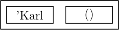
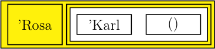
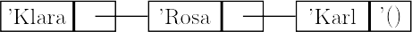
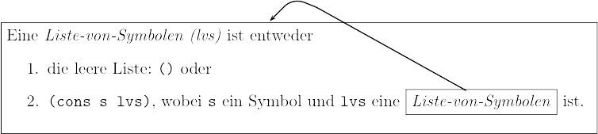
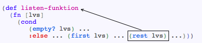

Funktionale Programmierung – Natürliche Rekursion
Johannes Brauer
Created: 2017-10-10 Tue 21:31
Symbolische Ausdrücke
Symbole
- Symbole sind eine einfache Möglichkeit für die Repräsentation nicht-numerischer Daten.
- Symbole sind aufgebaut wie Variablennamen; damit sie nicht als solche interpretiert werden, ist ein Hochkomma voranzustellen.
- Beispiele:
'symbol 'KarlMarx 'Dies-ist-auch-ein-Symbol 'x1 - Symbole dürfen Buchstaben, Ziffern und ein paar Sonderzeichen (keine Leerzeichen!) enthalten.
- Symbole sind – wie Zahlen – atomare Daten.
- Symbole werden – wie Zahlen – zu sich selbst ausgewertet.
- Einzige Operation auf symbolischen Atomen ist die Prüfung auf
Gleichheit:
=erwartet zwei Symbole als Argumente und lieferttruedann und nur dann, wenn sie identisch sind:
(= 'Hallo 'Hallo) ==> true (= 'Karl 'Rosa) ==> false (= 'Hallo hallo) ==> true ;; (wenn hallo für ’Hallo steht)
S-Ausdrücke
- Symbolische Ausdrücke (kurz: S-Ausdrücke) wurden erfunden von McCarthy für LISP.
- Definition: (vorläufig)
Ein S-Ausdruck ist- ein Atom, z.B.
27,’Karl,’ist - eine Folge von S-Ausdrücken, eingeschlossen in (), z.B.
’(Karl ist 27),
’((Dies ist) (eine Liste) (mit 3 Elementen))
Solche S-Ausdrücke heißen Listen. (Man beachte die Rekursivität dieser Definition!)
- ein Atom, z.B.
- Atome sind entweder numerisch, boolesch oder symbolisch.
Darstellung von Formeln als S-Ausdrücke
Bestandteile einer Formel: Konstanten, Variablen und duale Operatoren
Formel S-Ausdruck Konstante numerisches Atom Variable symbolisches Atom Operator symbolisches Atom \(p+q\) (ADD \(p\) \(q\)) \(p-q\) (SUB \(p\) \(q\)) \(p\ast q\) (MUL \(p\) \(q\)) \(p/q\) (DIV \(p\) \(q\)) \(p^q\) (EXP \(p\) \(q\)) \(p\) und \(q\) stehen für Teile einer Formel
Beispiel-Formel
- Die Formel \(x^2+3y-5\) wird durch den S-Ausdruck
’(ADD (EXP x 2) (SUB (MUL 3 y ) 5))
dargestellt.
Konstruktion von Listen
- Ausgangspunkt für die Konstruktion einer Liste ist die leere Liste,
die durch
’()
repräsentiert wird. (Clojure akzeptiert fast überall auch().) - Mit der Funktion
conskann ein Element als neues erstes Element einer Liste hinzugefügt werden.
(cons ’Karl () ) ==> (Karl) (cons ’Rosa (cons ’Karl () )) ==> (Rosa Karl) (cons ’Klara (cons ’Rosa (cons ’Karl () ))) ==> (Klara Rosa Karl)
- Die Standardfunktion
conserwartet zwei Argumente:- ein neues erstes Element und
- eine Liste
- Jede Liste kann man sich aus zwei Teilen bestehend vorstellen:
- das erste Element und
- die Restliste.
- Die drei obigen Listen können dann so veranschaulicht werden:



- eine andere gebräuchliche Darstellung für Listen:

Zerlegung von Listen
- Clojure stellt zwei Funktionen bereit zum Zugriff auf die beiden
Komponenten einer Liste:
firstliefert – angewendet auf eine nicht leere Liste – das erste Element.restliefert – angewendet auf eine nicht leere Liste – die Restliste.
Der Zusammenhang zwischen
cons,firstundrestkann durch die folgenden Gleichungen beschrieben werden:\[(first (cons\ elem\ liste)) = elem\\ (rest (cons\ elem\ liste)) = liste\]
Beispiele:
(first (cons 1 (cons 2 (cons 3 () )))) ==> 1 (first (rest (cons 1 (cons 2 (cons 3 () ))))) ==> 2 (first () ) ==> nil (rest () ) ==> ()
Funktionen für die Verarbeitung rekursiv definierter Datenstrukturen
Rekursive Datenstrukturen
- Für einen Gebrauchtwagenhändler repräsentieren wir die Menge der im
Angebot befindlichen Automarken in einer Liste von Symbolen, z.B. so:
(’VW ’Opel ’Toyota) - Listen können beliebig lang werden (vgl. Definition des S-Ausdrucks).
Eine Liste-von-Symbolen (lvs) kann als Datenstruktur wie folgt
rekursiv definiert werden: Eine Liste-von-Symbolen ist entweder
- die leere Liste:
()oder (cons s lvs), wobeisein Symbol undlvseine Liste-von-Symbolen ist
- die leere Liste:
- Bei der Verarbeitung von Listen müssen in der Regel diese beiden Alternativen getrennt behandelt werden. Das bedeutet, dass eine Fallunterscheidung erforderlich ist.
- Die leere Liste
()kann mit dem Prädikatempty?erkannt werden.
Verarbeitung beliebig langer Listen (1)
- Es soll geprüft werden können, ob in der Liste mit den Automarken
’BMWvorkommt. Gemäß Entwurfsvorschrift I schreiben wir Vertrag, Zweckbestimmung und Funktionskopf auf:
;; ermittelt, ob das Symbol 'BMW in der ;; liste-von-symbolen auftritt (def enthaelt-bmw? (fn [lvs] {:pre [(every? symbol? lvs)] :post[(or (true? %) (false? %))]} ...))
Verarbeitung beliebig langer Listen (2)
Anschließend formulieren wir drei Tests:
(deftest test-enthaelt-bmw? (is (not (enthaelt-bmw? () ))) (is (not (enthaelt-bmw? (cons 'VW (cons 'Opel (cons 'Toyota () )))))) (is (enthaelt-bmw? (cons 'VW (cons 'Opel (cons 'BMW (cons 'Toyota () )))))))
Verarbeitung beliebig langer Listen (3)
- Nun definieren wir eine Funktionsschablone gemäß Entwurfsvorschrift II (für bedingte Funktionen), die der Struktur der Datendefinition Liste-von-Symbolen folgt.
Da diese Definition zwei Fälle – die leere und die nicht-leere Liste – unterscheidet, ergibt sich folgende Schablone:
(def f (fn [lvs] (cond (empty? lvs) ... :else ... )))
Eine nicht-leere Liste ist eine aus zwei Komponenten zusammengesetzte Datenstruktur:
- dem ersten Element und
- der Restliste (ohne das erste Element).
Da für die Verarbeitung einer solchen Struktur in der Regel auf beide Komponenten zugegriffen werden muss, ergänzen wir die Schablone nun um die Aufrufe der Selektionsfunktionen für diese beiden Komponenten.
Verarbeitung beliebig langer Listen (4)
- Aus diesen Überlegungen ergibt sich folgende Schablone:
(def f (fn [lvs] (cond (empty? lvs) ... :else ... (first lvs) ... (rest lvs) ...)))
- Die Auslassungszeichen sind dann entsprechend der Zweckbestimmung auszufüllen, d.h. die Lösung muss aus den Zugriffen auf das erste Element und die Restliste geeignet kombiniert werden.
- Kehren wir dazu zu unserem Beispiel zurück.
Verarbeitung beliebig langer Listen (5)
Die Schablone angewendet auf
enthaelt-bmw?, wobei die Lösung für den Fall der leeren Liste bereits eingetragen ist:(def enthaelt-bmw? (fn [lvs] (cond (empty? lvs) false :else ... (first lvs) ... (rest lvs) ...)))
Verarbeitung beliebig langer Listen (6)
Nun betrachten wir die Komponenten der nicht-leeren Liste. Falls das erste Element das gesuchte ist, muss die Funktion
trueliefern:(def enthaelt-bmw? (fn [lvs] (cond (empty? lvs) false :else (cond (= (first lvs) 'BMW) true :else ... (rest lvs) ...))))
Verarbeitung beliebig langer Listen (7)
- Falls das gesuchte Symbol nicht das erste in der Liste ist, hängt das
Ergebnis der Funktion davon ab, ob es in der Restliste gefunden wird.
Da die Restliste ja selbst wieder eine Liste-von-Symbolen ist, ist
auf sie die Funktion
enthaelt-bmw?anwendbar:
(def enthaelt-bmw? (fn [lvs] {:pre [(every? symbol? lvs)] :post[(or (true? %) (false? %))]} (cond (empty? lvs) false :else (cond (= (first lvs) 'BMW) true :else (enthaelt-bmw? (rest lvs))))))
- Damit ist die Funktion vollständig. (Zu finden unter enthaelt-bmw.clj in moodle.)
Entwurfsvorschrift V
Entwurfsvorschrift V (Verarbeitung von Listen) (1)
- Die Funktion
enthaelt-bmw?wurde unter Verwendung der Entwurfsvorschriften I und II entwickelt. - Anpassung der Entwurfsvorschrift für die Entwicklung von Funktionen
zur Verarbeitung rekursiver Datenstrukturen:
- Die Phase Datenanalyse wird ergänzt um die Aktivität zum Entwurf der rekursiven Datenstruktur. Dies ist grundsätzlich dann nötig, wenn Datenmengen beliebiger Größe zu verarbeiten sind.
- Die Definition einer rekursiven Datenstruktur erfolgt durch Aufschreiben von mindestens zwei Sätzen, wobei mindestens einer einen Rückbezug auf die Definition und mindestens einer keinen Rückbezug auf die Definition aufweist.
Entwurfsvorschrift V (2)
- Betrachten wir dazu noch einmal die Definition der Liste von Symbolen:

- Der Pfeil verdeutlicht den Selbstbezug der Definition.
Entwurfsvorschrift V (3)
- In der Phase Funktionsschablone wird eine solche für eine bedingte Funktion erstellt, die für jeden Satz der Definition der rekursiven Datenstruktur eine Frage-Antwort-Kombination enthält.
- Dabei könnte für jede Frage, die eine dem Parameter der Funktion gleichartige Datenstruktur selektiert, ein Pfeil auf den Funktionsnamen gezeichnet werden.
- Man erhält dann eine Funktionsschablone, die zur rekursiven Definition der Datenstruktur gewissermaßen isomorph ist:

Entwurfsvorschrift V – Funktionsschablone
- Dieser Rückwärtspfeil wird durch eine rekursive Anwendung der Funktion ersetzt.
- Damit ergibt sich für das Beispiel der Verarbeitung beliebig langer Listen von Symbolen die folgende Funktionsschablone:
(def listen-funktion
(fn [lvs]
(cond
(empty? lvs) ...
:else ... (first lvs) ...
... (listen-funktion (rest lvs)) ...)))
- Wir sprechen hier von natürlicher Rekursion.
Entwurfsvorschrift V – Funktionsrumpf
- Die Entwicklung des Funktionsrumpfs beginnt mit den
Frage-Antwort-Kombinationen, die keine rekursiven Aufrufe enthalten.
- Die Antwort ist in der Regel einfach.
- Sie sollte in den Beispielen bereits vorkommen.
- Für die rekursiven Fälle ist zunächst vorauszusetzen, dass die rekursive Anwendung der Funktion auf die Restliste bereits das gewünschte Ergebnis liefert.
Dieses ist mit dem Ergebnis für das erste Element der Liste geeignet (problemabhängig) zu kombinieren.
Dieser Schritt besteht in dem Beispiel
enthaelt-bmw?in einer weiteren Fallunterscheidung.
Entwurfsvorschrift V – Zusammenfassung
Entwurfsvorschrift V (Rekursive Datenstrukturen)
Die sechs Phasen der Entwurfsvorschrift II bleiben grundsätzlich bestehen.
- Vertrag, Funktionskopf, Zweckbestimmung
- Datenanalyse / Datendefinition
- Beispiele / Tests
- Funktionsschablone
- Funktionsrumpf
- Testen
Es folgt die Beschreibung der neuen bzw. angepassten Phasen.
Entwurfsvorschrift V - Phase 2
Datenanalyse / Datendefinition
- Ziel: Definition von problemangepassten Datenstrukturen
- Aktivitäten:
- Analysiere die Problembeschreibung hinsichtlich der zu verarbeitenden Objekte. Definiere für jede Objektmenge eine (rekursive) Datenstruktur!
Entwurfsvorschrift V - Phase 3
Beispiele / Tests
- Ziel: Untersuche die Problembeschreibung nach Beispielen
- Aktivitäten:
Formuliere mindestens einen Test für den Fall, dass die rekursive Datenstruktur
- keine Elemente,
- genau ein Element oder
- mehr als ein Element
enthält!
Entwurfsvorschrift V - Phase 4
Funktionsschablone
- Ziel: Entwurf einer Funktionsschablone, die der rekursiven Struktur der Daten folgt.
- Aktivitäten:
- Schreibe das Skelett eines
cond-Ausdrucks auf mit je einer Frage-Antwort-Klausel für jeden nicht-rekursiven und jeden rekursiven Fall! - Notiere dabei für die rekursiven Fälle die passenden
Selektionsausdrücke
(first ...), (rest ...), wobei auf den Ausdruck(rest ...)die zu entwickelnde Funktion rekursiv anzuwenden ist.
- Schreibe das Skelett eines
Listen als Resultate
Anwendung von Entwurfsvorschrift V
- Dem Gebrauchtwagenhändler soll eine Funktion zur Verfügung gestellt werden, mit der er ein Modell aus seiner Angebotspalette entfernen kann.
Vertrag, Funktionskopf, Zweckbestimmung
;; entfernt eine Modell aus der Modellpalette (def entferne-modell (fn [modellpalette modell] {:pre [(every? symbol? modellpalette) (symbol? modell)] :post[(every? symbol? %)]} ...))
- Tests s. u. (aus "'Platzgründen"')
Funktionsschablone für entferne-modell
;; entfernt eine Modell aus der Modellpalette (def entferne-modell (fn [modellpalette modell] {:pre [(every? symbol? modellpalette) (symbol? modell)] :post[(every? symbol? %)]} (cond (empty? modellpalette) ... :else ... (first modellpalette) ... ... (entferne-modell (rest modellpalette) modell) ...)))
Funktionsrumpf für entferne-modell
- Folgende Fälle sind zu unterscheiden:
- Wenn die Modellpalette die leere Liste ist, ist das Resultat
empty. - Wenn das zu entfernende Modell das erste in der Liste ist, so ist das Resultat die Restliste.
- Andernfalls besteht die Ergebnisliste aus dem ersten Modell und der Restliste, aus der das zu entfernende Modell entfernt wurde.
- Wenn die Modellpalette die leere Liste ist, ist das Resultat
(def entferne-modell (fn [modellpalette modell] (cond (empty? modellpalette) () (= (first modellpalette) modell) (rest modellpalette) :else (cons (first modellpalette) (entferne-modell (rest modellpalette) modell)))))
Funktion entferne-modell ohne Tests
;; entfernt eine Modell aus der Modellpalette (def entferne-modell (fn [modellpalette modell] {:pre [(every? symbol? modellpalette) (symbol? modell)] :post[(every? symbol? %)]} (cond (empty? modellpalette) () (= (first modellpalette) modell) (rest modellpalette) :else (cons (first modellpalette) (entferne-modell (rest modellpalette) modell)))))
Tests für entferne-modell
(deftest test-entferne-modell (is (= (entferne-modell () 'BMW) ())) (is (= (entferne-modell '(BMW) 'BMW) ())) (is (= (entferne-modell '(BMW) 'OPEL) '(BMW))) (is (= (entferne-modell '(BMW OPEL FORD) 'TOYOTA) '(BMW OPEL FORD))) (is (= (entferne-modell '(BMW OPEL FORD) 'OPEL) '(BMW FORD))))
Entwurfsvorschrift V und Hilfsfunktionen
Top-down-Entwurf
- Anhand eines weiteren Beispiels soll die Anwendung von Entwurfsvorschrift V demonstriert werden.
- Während des Entwurfsprozesses kann es sich als zweckmäßig erweisen, für die Lösung bestimmter Teilprobleme eigene Funktionen (Hilfsfunktionen) vorzusehen.
- Dabei ist es hilfreich, diese Hilfsfunktionen als bereits existent vorauszusetzen, um zunächst mit ihrer Hilfe die Lösung des Hauptproblems formulieren zu können.
Diese Vorgehensweise wird als
- Top-down-Entwurf oder auch
- schrittweise Verfeinerung
bezeichnet.
Literaturhinweise
- Gelegentlich werden auch die Begriffe Wunschdenken oder Wunschliste
benutzt, z.B. in
- M. Felleisen, R. Findler, M. Flatt, S. Krishnamurthi: How to Design Programs. (Htdp2003)
- H. Klaeren, M. Sperber: Die Macht der Abstraktion. (KlaerenSperber2007)
- Das Prinzip der Entwurfsvorschriften stammt aus HtDP.
Ein weiteres empfehlenswertes Buch:
- Abelson, G. Sussman, J. Sussman: Structure and Interpretation of
Computer Programs. (Sicp1999)
Top-down-Entwurf – Beispiel
Die Funktion
(symbolsin x)liefere, angewandt auf eine Liste von Symbolen, eine Liste mit dem einmaligen Auftreten jedes dieser Symbole:x (symbolsin x) (DIE KATZE UND DIE MAUS) (DIE KATZE UND MAUS) (A B A B A C A) (A B C) Die Anwendung von Entwurfsvorschrift V (ohne Tests) liefert zunächst:
;; entfernt aus eine Liste von Symbolen jedes ;; mehrfache Auftreten eines Symbols (def symbolsin (fn [lvs] {:pre [(every? symbol? lvs)] :post [(every? symbol? %)]} (cond (empty? lvs) ... :else ... (first lvs) ... ... (symbolsin (rest lvs)) ...)))
Top-down-Entwurf – Beispiel (2)
- Das Resultat von
symbolsinist(), wenn das Argument die leere Liste ist. - Für die Kombination des Ergebnisses aus dem ersten Listenelement und
der rekursiven Anwendung von
symbolsinauf die Restliste sind zwei Fälle zu unterscheiden:- Wenn das erste Element in
(symbolsin (rest lvs))bereits auftaucht, ist(symbolsin (rest lvs))schon das endgültige Resultat. - Wenn es dort noch nicht vorhanden ist, muss das erste Element noch hinzugefügt werden.
- Wenn das erste Element in
- Das Ergebnis von
symbolsinkann als eine Menge, repräsentiert durch eine Liste ohne Wiederholungen, betrachtet werden. Diese Idee führt auf eine Hilfsfunktionaddtoset, die ein Element einer Menge hinzufügt, wenn es in ihr nicht bereits enthalten ist.
Top-down-Entwurf – Beispiel (3)
;; fuegt einer Liste von Symbolen ein weiteres hinzu, ;; falls es nicht bereits enthalten ist. (def addtoset (fn [lvs s] {:pre [(every? symbol? lvs) (symbol? s)] :post [(every? symbol? %)]} (cond (empty? lvs) ... :else ... (first lvs) ... ... (addtoset (rest lvs) s) ...))) (deftest test-addtoset (is (= (addtoset '(a b c) 'b) '(a b c))) (is (= (addtoset '(a b c) 'd) '(d a b c))))
Mit dieser Funktion kann symbolsin vervollständigt werden.
Top-down-Entwurf – Beispiel (4)
;; entfernt aus eine Liste von Symbolen jedes ;; mehrfache Auftreten eines Symbols (def symbolsin (fn [lvs] {:pre [(every? symbol? lvs)] :post [(every? symbol? %)]} (cond (empty? lvs) () :else (addtoset (symbolsin (rest lvs)) (first lvs))))) (deftest test-addtoset (is (= (symbolsin ()) ())) (is (= (symbolsin '(a b c a d c)) '(b a d c))))
Top-down-Entwurf – Beispiel (5)
- Für die Funktion
addtosetstellen wir folgende Überlegungen an:- Falls die Liste (Menge) leer ist, kann das neue Element mit
conshinzugefügt werden. - Wenn die Menge nicht leer ist, muss geprüft werden, ob das Element bereits in der Liste enthalten ist.
- Falls die Liste (Menge) leer ist, kann das neue Element mit
Fügen wir der Wunschliste ein Prädikat
member?hinzu.... (def addtoset (fn [lvs s] {:pre [(every? symbol? lvs) (symbol? s)] :post [(every? symbol? %)]} (cond (empty? lvs) (cons s lvs) :else (cond (member? lvs s) lvs) :else (cons s lvs))))
Top-down-Entwurf – Beispiel (6)
Die Schablone für die Funktion member?:
; prueft, ob ein Symbol in einer Liste enthalten ist. (def member? (fn [lvs s] {:pre [(every? symbol? lvs) (symbol? s)] :post [(or (true? %) (false? %))]} (cond (empty? lvs) ... :else ... (first lvs) ... ... (member? (rest lvs) s) ...))) (deftest test-member (is (member? '(a b x) 'x)) (is (not (member? '(a b x) 'y))))
Top-down-Entwurf – Beispiel (7)
; prueft, ob ein Symbol in einer Liste enthalten ist. (def member? (fn [lvs s] {:pre [(every? symbol? lvs) (symbol? s)] :post [(or (true? %) (false? %))]} (cond (empty? lvs) false :else (cond (= (first lvs) s) true :else (member? (rest lvs) s))))) (deftest test-member (is (member? '(a b x) 'x)) (is (not (member? '(a b x) 'y))))
Das vollständige Programm symbolsin ist zu finden unter
symbolsin.clj in moodle.
Rekursive Definition der natürlichen Zahlen
Mathematische Definition
- Bisher wurden nur Listen als rekursive Datenstrukturen betrachtet.
- Mathematisch können die natürlichen Zahlen folgendermaßen definiert
werden:
- \(0\) ist eine natürliche Zahl.
- Wenn \(n\) eine natürliche Zahl ist, dann ist auch \(succ(n)\) eine natürliche Zahl.
- Wir definieren also
- eine Konstante (\(0\)) und
- eine Nachfolgeroperation (\(succ\)).
- Der Term \(succ(succ(succ(0)))\) entspricht dann der \(3\), ohne dass wir die \(3\) als Konstante einführen müssen.
- Durch die Prämisse im zweiten Teil der Definition ist diese rekursiv.
Definition in Clojure
- In Clojure-Notation könnte die Definition lauten:
zeroist eine natürliche Zahl.(succ n)ist eine natürliche Zahl, wennneine natürliche Zahl ist.
- Um Verwechslungen mit den in Clojure eingebauten Zahlen zu vermeiden,
wird hier die Konstante Null durch
zeroanstelle von0dargestellt.
Clojure-Definitionen für zero und succ
Konstanten sind u.a. dadurch gekennzeichnet, dass sie zu sich selbst ausgewertet werden. Für die Konstante
zerokönnen wir das durch die folgende Definition erreichen:(def zero 'zero)
- Die Eingabe von zero in der Repl liefert dann
zero. - Da wir in unserer abstrakten, rekursiven Definition für andere
natürliche Zahlen nur
succ-Terme haben, soll auch ein Clojure-Ausdruck(succ (succ zero))zu sich selbst ausgewertet werden. Dies ist durch folgende Definition zu erreichen:
(def succ (fn [n] (list 'succ n)))
- Die Auswertung von
(succ (succ (succ zero)))
liefert damit
(succ (succ (succ zero))).
Der abstrakte Datentyp Nat
Mit den Definitionen für
zeroundsucchaben wir quasi einen neuen Datentyp geschaffen, den wir Nat nennen wollen.(def zero 'zero) ;; succ: Nat -> Nat (def succ (fn [n] (list 'succ n))) (deftest test-succ (is (= (succ zero) (succ zero))) (is (= (succ (succ zero)) (succ (succ zero)))))
- Mithilfe dieses Datentyps können wir Funktionen definieren, die z.B. natürliche Zahlen (d.h. Exemplare von Nat) als Ergebnis liefern.
Anwendung des Datentyps Nat
- Beispiel: Zählen der Elemente einer Liste.
In Anlehnung an Entwurfsvorschrift V ergibt sich folgende Schablone:
;; zaehlt die Anzahl der Elemente ihres Arguments ;; countElements: (list-of any) -> Nat (def countElements (fn [lst] (cond (empty? lst) ... :else ... (first lst) ... (countelements (rest lst)) ...))) (deftest test-countElements (is (= (countElements () ) zero)) (is (= (countElements '(19 27 36)) (succ (succ (succ zero))))))
Die Funktion countElements
Wenn die Liste nicht leer ist, ist das Resultat der Nachfolger der Anwendung von
countElementsauf die Restliste.;; zaehlt die Anzahl der Elemente ihres Arguments ;; countElements: (list-of any) -> Nat (def countElements (fn [lst] (cond (empty? lst) zero :else (succ (countElements (rest lst)))))) (deftest test-countElements (is (= (countElements () ) zero)) (is (= (countElements '(19 27 36)) (succ (succ (succ zero))))))
Weitere Operationen für Nat
- Die Operation \(succ\) ermöglicht es bisher nur (vorwärts) zu zählen.
- Wir definieren zwei weitere Operationen zur
- Ermittlung des Vorgängers einer natürlichen Zahl: \(pred\)
- Addition von zwei natürlichen Zahlen: \(plus\)
- Die Definitionen nehmen wir dadurch vor, dass wir die
Wechselwirkungen der neuen Operationen mit den Basisoperationen \(0\)
und \(succ\) zunächst durch Gleichungen beschreiben.
- Für \(pred\) gelte (mit \(n \in \textbf{Nat}\)): \[\begin{aligned} pred(succ(n)) & = & n \\ pred(0) & & \mathrm{undefiniert} \end{aligned}\]
- Für \(plus\) gelte (mit \(n, m \in \textbf{Nat}\)): \[\begin{aligned} plus(0, n) & = & n \\ plus(succ(n), m) & = & succ(plus(n, m)) \end{aligned}\]
Prädikat zero?
- Beide Definitionen basieren auf einer Fallunterscheidung. Um sie in
entsprechende Clojure-Definitionen zu übertragen, ist es sinnvoll,
zunächst ein Prädikat
=zero?zu definieren, das feststellt, ob sein Argumentzeroist. Dabei nutzen wir die Tatsache, dass Exemplare von Nat entweder
succ-Terme (also Listen) oderzerosind.;; prueft, ob ihr Argument zero ist. ;; =zero?: Nat -> boolean (def =zero? (fn [n] (= n zero))) (deftest test-=zero? (is (= (=zero? zero) true)) (is (= (=zero? (succ zero)) false)))
Der abstrakte Datentyp Nat: pred
Definieren wir nun die Funktion
pred:;; liefert den Term des Vorgaengers ihres Arguments ;; pred: Nat -> Nat (def pred (fn [n] (cond (=zero? n) (throw (Exception. "zero hat keinen Vorgaenger")) :else (first (rest n))))) (deftest test-pred (is (= (pred (succ zero)) zero)) (is (= (pred (succ (succ zero))) (succ zero))) (is (thrown? Exception (pred zero))))
Der abstrakte Datentyp Nat: plus
Die rekursive Definition von \(plus\) übertragen wir in eine rekursive Funktion
plus:;; berechnet die Summe ihrer Argumente ;; plus: Nat Nat -> Nat (def plus (fn [n m] (cond (=zero? n) m :else (succ (plus (pred n) m))))) (deftest test-plus (is (= (plus zero (succ zero)) (succ zero))) (is (= (plus (succ zero) (succ zero))) (succ (succ zero))) (is (= (plus (succ zero) (plus (succ zero) (succ zero))) (succ (succ (succ zero))))))
Der Datentyp Nat: Zusammenfassung
Was haben wir gelernt?
- Rekursive Datenstrukturen können beliebig wachsen.
- Der Datentyp Nat ermöglicht das Rechnen mit beliebig großen natürlichen Zahlen.
- Das kann man in Clojure zwar einfacher haben, in mancher populärer Programmiersprache aber nicht.
- Datentypen kann man bauen.
- Mit Exemplaren des abstrakten Datentyps Nat kann man rechnen, ohne sich auf eine herkömmliche (maschinenabhängige) Repräsentation von Zahlen festlegen zu müssen.
- Ausblick: Abstrakte Datentypen haben eine besondere Bedeutung für die formale Spezifikation der Semantik von Software erlangt.
Zusammenfassung
Entwurfsvorschrift (Bedeutung)
- kein Allheilmittel!
- stellt eine Handlungsanleitung dar.
- Phase 3 stellt hohe Anforderungen:
- Verstehen der Problembeschreibung,
- Vermögen, mathematische Zusammenhänge zu erkennen,
- Einarbeitung in fremde Begriffswelt,
- Entwicklung eigener Fachsprachen.
- Informatik = Sprachingenieurwesen?